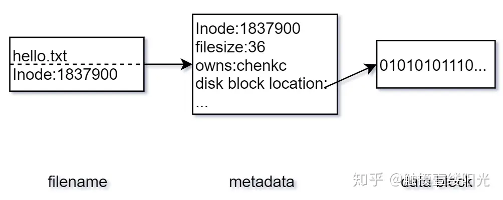
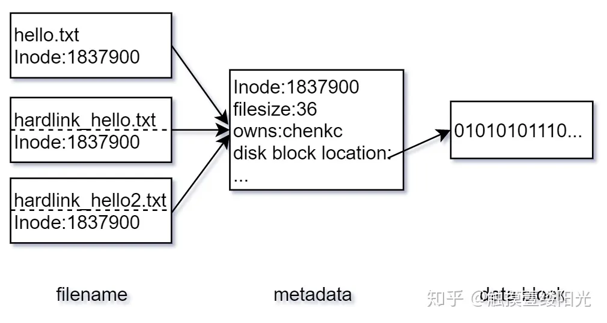
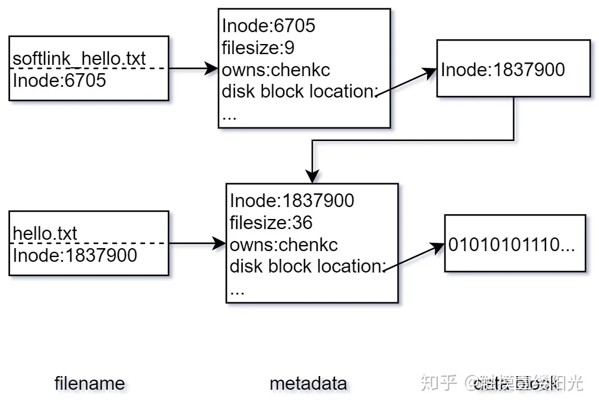

重新学习Linux系统编程 1
重新学习Linux系统编程1
这是一个回顾性质的博客，目的是重新更加系统的认识Linux操作系统，为后续的学习打下基础
文件，文件系统
文件是Linux下最重要，最基础的一个抽象：事实上，我们都知道一个名言：
一切皆文件
也就是说，我们在Linux系统层面上，往往都是将内存块或者是设备等对象当成文件来进行处理和操作。
文件必须要打开才能操作，打开文件的API是大多数人接触的第一个正式的API：open，我们看看man手册的说法：
int open(const char *pathname, ...); 文件的常见打开方式是：只读，只写，读写。在文件操作下分别对应了：
O_RDONLY,
O_WRONLY,
O_RDWR
我们意识到, open这里返回的是一个整数。事实上，他就是我们的文件操作HANDLE，也就是说，一个句柄，我们使用这个整数来代表一个文件。文件描述符在用户空间内共享，我们就是使用一个文件描述符来完成对文件的操作。
经典普通文件
我们最常打交道的就是普通文件。其本质是一串线性组织的字节流。在Linux下，我们可以在合法的文件的任意的位置上开始读写，对文件的操作势必要从某一个字节开始，我们这下就认为这是文件的地址所在。
对于第一次打开文件，偏移量都是0。
文件的偏移可以超出文件的大小！这很重要，事实上，当我们给予OFFSET一个大于文件长度的值时，总是会在文件的后面补上0.当然，文件的最大长度是存在的，这个可以参考系统手册进行查询。
文件的长度是按照字节作为基本单位进行计算的——这个是任何熟悉Windows操作系统都应该感到熟悉的。我们可以使用O_TRUNC这样的Flag来截断文件的大小，注意——仍然可以超出文件的大小，这还是会在后面填补0.
文件可以被一个或者是多个线程同时打开！这点务必注意。同样的，也会返回在每个线程下的对应的文件ID。用户对文件的访问顺序需要自己保证，这点务必注意。
文件在高层的抽象上，是通过文件名称访问的。但是事实上标识文件的是——inode。也就是索引节点。inode是文件系统为文件分配的唯一的整数值。事实上，我们文件的抽象就是使用“映射”这个基本的思路，将文件与整数值进行标记匹配，整个文件系统是一颗大树。当我们想要解析一个路径的时候（无论是文件名还是怎样的），都是一层一层的抛开路径寻找一级一级的inode，最后将符合条件的文件句柄返回给我们用户。Linux系统自然遵循时间局部性原理，总是缓存路径。
目录和链接
我们有的时候不希望总是通过链接访问文件，而是希望像Windows快捷方式那样，使用链接的方式跳转。在Linux系统上显然可行。
我们先知道，可以将一系列文件关联在一个目录下构成一颗树。这样看，目录就是一个含有子节点的结点（子树），普通文件就是简单的叶子节点。
于是，诸如这种经典的目录：
/home/charliechen114514/DesktopPS: 可以使用realpath file.txt的方式查一个文件或者是目录的绝对路径
这个路径，是一个以/开头的路径，这就是一个绝对路径，而：
~/Desktop
./
../sth/Out.txt 这就是一个相对路径，因为他从当前出发，相对于自身而不是根的寻找其他文件。
软硬连接
在 Linux 文件系统中，一个文件被分成两个部分：元数据（metadata）与用户数据（user data）。元数据为文件的附加属性，如索引节点（Inode）、文件大小、文件创建时间、文件所有者等。元数据中并不包含文件名，文件名仅仅是为了方便用户使用。Linux 文件系统为每一个保存在磁盘分区中的文件（无论什么类型）都分配一个索引节点号（Inode Number），索引节点号是文件在一个文件系统中的唯一标识，不同文件所对应的索引节点号是不相同的；用户数据，即文件数据块（data block），文件数据块中以二进制的形式记录着文件的真实内容。

如果想要查看对应文件的索引节点号可以使用ls -i指令：
(base) charliechen114514@charliechen114514-virtual-machine:~/Desktop$ echo "hello!" > hello.txt
(base) charliechen114514@charliechen114514-virtual-machine:~/Desktop$ cat hello.txt
hello!
(base) charliechen114514@charliechen114514-virtual-machine:~/Desktop$ ls -i hello.txt
7144359 hello.txt1. 硬链接
在 Linux 中允许多个文件名指向同一个索引节点号，而硬链接（hard link, 也称链接）指的是通过索引节点号进行的链接。可以通过ln指令为文件创建硬链接：
ln 源文件 链接文件我们下面马上试试看为 hello.txt 文件创建两个硬链接：
(base) charliechen114514@charliechen114514-virtual-machine:~/Desktop$ ln hello.txt hd_hello.txt
(base) charliechen114514@charliechen114514-virtual-machine:~/Desktop$ ln hello.txt hd_hello2.txt
(base) charliechen114514@charliechen114514-virtual-machine:~/Desktop$ ls -a
. .. hd_hello2.txt hd_hello.txt hello.txt open.txt scripts
(base) charliechen114514@charliechen114514-virtual-machine:~/Desktop$ ls -il
总计 64
7144359 -rw-rw-r-- 3 charliechen114514 charliechen114514 7 1月 4 18:32 hd_hello2.txt
7144359 -rw-rw-r-- 3 charliechen114514 charliechen114514 7 1月 4 18:32 hd_hello.txt
7144359 -rw-rw-r-- 3 charliechen114514 charliechen114514 7 1月 4 18:32 hello.txt 索引节点号为文件的唯一标识，因此源文件和硬链接文件是仅文件名不同的相同文件，创建文件的硬链接相当于为文件又起了一个新的文件名。

(base) charliechen114514@charliechen114514-virtual-machine:~/Desktop$ cat hello.txt
hello!
(base) charliechen114514@charliechen114514-virtual-machine:~/Desktop$ cat hd_hello.txt
hello!
(base) charliechen114514@charliechen114514-virtual-machine:~/Desktop$ cat hd_hello2.txt
hello! 执行ls -il指令后发现在表示文件类型以及权限的 10 个字符之后有一个数字 3，对于文件来说 3 表示硬链接数，每一个硬链接数都可以看成是文件的一个文件名
假设我们现在删除硬链接对应的源文件 hello.txt：
(base) charliechen114514@charliechen114514-virtual-machine:~/Desktop$ rm hello.txt
(base) charliechen114514@charliechen114514-virtual-machine:~/Desktop$ cat hd_hello.txt
hello!
(base) charliechen114514@charliechen114514-virtual-machine:~/Desktop$ cat hd_hello2.txt
hello! 如果删除硬链接对应的源文件，硬链接文件仍然存在，这是因为硬链接是有着相同索引节点号仅文件名不同的文件，因此，删除一个硬链接文件并不影响其他有相同索引节点号的文件。我们可以为重要的文件创建硬链接，这样即使错误操作误删了文件，也不会重要文件造成影响。
当文件没有任何文件名指向的时候，文件也会被删除，也就是此时的硬链接数为 0。硬链接相当于为文件创建了一个新的文件名，当删除其中一个链接的时候并不影响索引节点本身以及其它链接到该索引节点的文件名，所以这些链接是相对独立的，这也是为什么 Linux 中仅仅标识文件硬链接的数目，并没有显示的标识文件是否为硬链接文件的原因。
2. 软链接
软链接（也称符号链接）可以看成是一个普通的文件，只不过这个文件中的数据块存放的是源文件的索引节点号。可以通过为ln指令添加-s（s: soft 的意思）选项创建软链接：
ln -s 源文件 链接文件为 hello.txt 文件创建一个软链接：
(base) charliechen114514@charliechen114514-virtual-machine:~/Desktop$ echo "hello!" > hello.txt
(base) charliechen114514@charliechen114514-virtual-machine:~/Desktop$ ln -s hello.txt sl_hello.txt
(base) charliechen114514@charliechen114514-virtual-machine:~/Desktop$ ls -il
总计 8
7144355 -rw-rw-r-- 1 charliechen114514 charliechen114514 7 1月 4 18:40 hello.txt
7144356 lrwxrwxrwx 1 charliechen114514 charliechen114514 9 1月 4 18:40 sl_hello.txt -> hello.txt 源文件的索引节点号为 1837900，而软链接文件的索引节点号为 6705，显然源文件和软链接文件并不是同一个文件，其实从两个文件的大小也可以看出来，其中源文件大小为 36 个字节，而软链接文件大小仅仅为 9 个字节。

软链接文件的数据块中仅仅存放着源文件的索引节点号，这也是为什么源文件为 36 个字节，而软链接文件却有 9 个字节的原因。由于软链接只不过是数据块中存放了源文件的索引节点号，因此删除软链接文件并不会影响源文件。但是如果删除源文件，由于软链接文件中指向的索引节点号对应的文件没有了，所以会导致软链接文件失效。
(base) charliechen114514@charliechen114514-virtual-machine:~/Desktop$ rm sl_hello.txt
(base) charliechen114514@charliechen114514-virtual-machine:~/Desktop$ cat hello.txt
hello!
(base) charliechen114514@charliechen114514-virtual-machine:~/Desktop$ ln -s hello.txt sl_hello.txt
(base) charliechen114514@charliechen114514-virtual-machine:~/Desktop$ rm hello.txt
(base) charliechen114514@charliechen114514-virtual-machine:~/Desktop$ cat sl_hello.txt
cat: sl_hello.txt: 没有那个文件或目录 软链接不同于硬链接，在软链接中删除源文件会影响到软链接的使用，因此在 Linux 中会有很多地方标识文件是否为软链接：
ls -l指令输出的文件，其中十个字符中的第一个字符代表文件类型，如果文件为软链接文件则为l；- Linux 会使用特殊的颜色将软链接文件与其它文件进行区分，如果删除了源文件，软链接失效则软链接文件也会呈现失效的颜色；
注意：如果软链接文件和源文件不在同一个目录，源文件要使用绝对路径，不能使用相对路径。
3. 硬链接和软链接的区别
最后来简单总结一下硬链接和软链接的区别：
特殊文件
我们下面就是要将到的是特殊文件，事实上他们是内核对象的一种以文件形式表达的抽象——或者说，我们以文件的视角来看待这些内核对象。
常见的是一些设备，我们可以对设备进行IO流处理。
经典的UNIX设备分为两大组：字符设备和块设备。
字符设备的代表可以是键盘。我们敲击键盘向计算机系统发送字符。这就是字符设备。对于那些没有发出字符时，设备返回EOF。在计算机的抽象层面上，不存在字符的漏读和乱序的阅读。
块设备指代的是字符数组块来进行阅读。设备驱动会把字节映射到可以寻址的设备上，这样用户就可以按照任意的顺序访问设备。
管道，或者说是FIFO，是一个常用于进程通讯的文件。一个普通的管道总是将一个程序的输出作为另一个程序的输入：
echo "What about pipes in Linux?" > communication.txt 这个例子就是使用了管道的功能。他会把我们的字符串送到communication.txt里去。现在就可以试试：
cat communication.txt
What about pipes in Linux? Socket，也就是套接字，我自己首次接触是在unix网络编程那里，学习到的第一个API就是socket，当然和我们这里讨论的socket不是一个层级的东西。当然，事实上在广义层面上是进程间的高级形式。
文件系统和命名空间
定义文件系统是一个合理有效的层次结构组织的文件和目录的集合。当我们给全局的命名空间下添加与删除文件系统的时候，实质上就是叫“挂载”和“卸载”文件系统
(mount and unmount)，如你所见，这就是Linux的挂载和卸载文件系统的经典指令。
我们一般认为文件系统都是客观存在的物理介质的抽象。但实际上Linux支持虚拟文件系统，比如说其他的网络文件系统等。
块设备的最小寻址单元被称为扇区。扇区是设备的一个物理属性。一般而言是2的整数次方，最常见的取到的是512字节。
而文件系统的最小逻辑单元是块：大小是2的整数次方个扇区大小。Linux中必须保证块的大小小于页的大小（否则没法单次映射进入MMU导致操作次数不对等）
进程
这里是OS的概念了。《现代操作系统》认为进程是正在活动的程序。或者说是正在被中央处理器执行代码段。这里我们袭用这样的概念。
进程的生命周期是从可执行的目标代码开始。在Linux下一般是ELF格式构成。这样的文件为了方便运行需要文件内分段（早在产生文件的时候就分好了，无需你的操心）。一般的——这些可执行文件包含
文本段：.text
数据段：.data
BSS段：.bss（现代编译器将那些未被初始化的全局变量存放到这里，当被初始化时将会动态的移除插入到数据段中）
进程作为运行的代码和机器指令的抽象，其切换由OS组织完成，由硬件执行，让每一个进程都感觉自己在独一无二的占用CPU（这里在内存上采用虚拟内存分配，将虚拟内存通过页表解析拿到虚拟地址，其结果交给MMU内存管理单元处理映射得到正确的，进程切换上可能交给tss处理，也可能时操作系统代之在系统软件层面上完成切换时的备份）
线程
现代计算机下：进程退化为系统分配给打算运行或者是正在运行的程序的资源分配的最小单元。那些只有一个线程的程序是单线程程序，而多线程程序的定义那就显而易见了。
Linux下则是复用了进程的资源定义，在内存资源上尽可能少的做必要的拷贝。所以Linux对系统级的线程本质上是复用了进程的API。
进程层次结构
Linux的进程组成了一颗进程树，也就是说，我们可以通过封装经典B树的API来封装产生交流子进程和父进程的API。这也就使得我们可以管理每一个进程，对于第一个进程init，他是一切进程的父进程（看看main.c的代码就知道了，其余的console等进程都是派生自init进程），那些孤儿进程当无人收养时则会被拉近init进程当孩子。
用户和组
Linux通过用户和组来进行权限认证，每一个用户都会使用唯一一个正整树进行标识。每一个进程都会与一个uid相联。也就是说，我们认为这个进程就是由这个uid发起的请求而运行的。
root权限的uid是0。root作为超级用户可以执行几乎所有的权限。
权限问题
我们使用一个九位的二进制数描述一个文件的权限：
_ _ _ _ _ _ _ _ _
| | | | | | | | |---针对所有用户可执行否？
| | | | | | | |-----针对所有用户可写否?
| | | | | | |-------针对所有用户可读否?
| | | | | |---------针对用户所在组可执行否?
| | | | |-----------针对用户所在组可写否？
| | | |-------------针对用户所在组可读否?
| | |---------------针对用户本身可执行否？
| |-----------------针对用户本身可写否？
| ------------------针对用户本身可写否？ 1标识的是真，0标识的是假。所以我们就会使用一个三位的数字：_ _ _来标识权限：
-rw------- (600) 只有拥有者有读写权限。
-rw-r--r-- (644) 只有拥有者有读写权限；而属组用户和其他用户只有读权限。
-rwx------ (700) 只有拥有者有读、写、执行权限。
-rwxr-xr-x (755) 拥有者有读、写、执行权限；而属组用户和其他用户只有读、执行权限。
-rwx--x--x (711) 拥有者有读、写、执行权限；而属组用户和其他用户只有执行权限。
-rw-rw-rw- (666) 所有用户都有文件读、写权限。
-rwxrwxrwx (777) 所有用户都有读、写、执行权限。信号
信号是一个单向的异步通知——也就是说，只有接收方可以知道接受了什么信号，但是不知道发出方从何而来。当进程受到信号时会立即停下手中事情，转向处理信号。SIGKILL就是这样终止一个进程的！
错误处理和常见的错误预定义
参见附录的errno
我们这里给出一些重要的函数：
#include <stdio.h>
/* 立即向stderr发出输出错误信息 */
void perror (const char* str);
/* 返回由errnum给出的人可读的错误信息 */
char* strerror(int errnum);
/* 返回由errnum给出的人可读的错误信息，这个函数是线程安全的 */
char* strerror_r(int errnum, char* buf, size_t len); 由于errno的全局性，请务必保证自己获取errno的时候马上要拷贝一份值而不是不做备份直接使用！
附录
open
man 2 open
OPEN(2) Linux Programmer's Manual OPEN(2)
NAME
open, openat, creat - open and possibly create a file
SYNOPSIS
#include <sys/types.h>
#include <sys/stat.h>
#include <fcntl.h>
int open(const char *pathname, int flags);
int open(const char *pathname, int flags, mode_t mode);
int creat(const char *pathname, mode_t mode);
int openat(int dirfd, const char *pathname, int flags);
int openat(int dirfd, const char *pathname, int flags, mode_t mode);
/* Documented separately, in openat2(2): */
int openat2(int dirfd, const char *pathname,
const struct open_how *how, size_t size);
Feature Test Macro Requirements for glibc (see feature_test_macros(7)):
openat():
Since glibc 2.10:
_POSIX_C_SOURCE >= 200809L
Before glibc 2.10:
_ATFILE_SOURCE
DESCRIPTION
The open() system call opens the file specified by pathname. If the
specified file does not exist, it may optionally (if O_CREAT is speci‐
fied in flags) be created by open().
The return value of open() is a file descriptor, a small, nonnegative
integer that is used in subsequent system calls (read(2), write(2),
lseek(2), fcntl(2), etc.) to refer to the open file. The file descrip‐
tor returned by a successful call will be the lowest-numbered file de‐
scriptor not currently open for the process.
By default, the new file descriptor is set to remain open across an ex‐
ecve(2) (i.e., the FD_CLOEXEC file descriptor flag described in fc‐
ntl(2) is initially disabled); the O_CLOEXEC flag, described below, can
be used to change this default. The file offset is set to the begin‐
ning of the file (see lseek(2)).
A call to open() creates a new open file description, an entry in the
system-wide table of open files. The open file description records the
file offset and the file status flags (see below). A file descriptor
is a reference to an open file description; this reference is unaf‐
fected if pathname is subsequently removed or modified to refer to a
different file. For further details on open file descriptions, see
NOTES.
The argument flags must include one of the following access modes:
O_RDONLY, O_WRONLY, or O_RDWR. These request opening the file read-
only, write-only, or read/write, respectively.
In addition, zero or more file creation flags and file status flags can
be bitwise-or'd in flags. The file creation flags are O_CLOEXEC,
O_CREAT, O_DIRECTORY, O_EXCL, O_NOCTTY, O_NOFOLLOW, O_TMPFILE, and
O_TRUNC. The file status flags are all of the remaining flags listed
below. The distinction between these two groups of flags is that the
file creation flags affect the semantics of the open operation itself,
while the file status flags affect the semantics of subsequent I/O op‐
erations. The file status flags can be retrieved and (in some cases)
modified; see fcntl(2) for details.
The full list of file creation flags and file status flags is as fol‐
lows:
O_APPEND
The file is opened in append mode. Before each write(2), the
file offset is positioned at the end of the file, as if with
lseek(2). The modification of the file offset and the write op‐
eration are performed as a single atomic step.
O_APPEND may lead to corrupted files on NFS filesystems if more
than one process appends data to a file at once. This is be‐
cause NFS does not support appending to a file, so the client
kernel has to simulate it, which can't be done without a race
condition.
O_ASYNC
Enable signal-driven I/O: generate a signal (SIGIO by default,
but this can be changed via fcntl(2)) when input or output be‐
comes possible on this file descriptor. This feature is avail‐
able only for terminals, pseudoterminals, sockets, and (since
Linux 2.6) pipes and FIFOs. See fcntl(2) for further details.
See also BUGS, below.
O_CLOEXEC (since Linux 2.6.23)
Enable the close-on-exec flag for the new file descriptor.
Specifying this flag permits a program to avoid additional fc‐
ntl(2) F_SETFD operations to set the FD_CLOEXEC flag.
Note that the use of this flag is essential in some multi‐
threaded programs, because using a separate fcntl(2) F_SETFD op‐
eration to set the FD_CLOEXEC flag does not suffice to avoid
race conditions where one thread opens a file descriptor and at‐
tempts to set its close-on-exec flag using fcntl(2) at the same
time as another thread does a fork(2) plus execve(2). Depending
on the order of execution, the race may lead to the file de‐
scriptor returned by open() being unintentionally leaked to the
program executed by the child process created by fork(2). (This
kind of race is in principle possible for any system call that
creates a file descriptor whose close-on-exec flag should be
set, and various other Linux system calls provide an equivalent
of the O_CLOEXEC flag to deal with this problem.)
O_CREAT
If pathname does not exist, create it as a regular file.
The owner (user ID) of the new file is set to the effective user
ID of the process.
The group ownership (group ID) of the new file is set either to
the effective group ID of the process (System V semantics) or to
the group ID of the parent directory (BSD semantics). On Linux,
the behavior depends on whether the set-group-ID mode bit is set
on the parent directory: if that bit is set, then BSD semantics
apply; otherwise, System V semantics apply. For some filesys‐
tems, the behavior also depends on the bsdgroups and sysvgroups
mount options described in mount(8).
The mode argument specifies the file mode bits to be applied
when a new file is created. If neither O_CREAT nor O_TMPFILE is
specified in flags, then mode is ignored (and can thus be speci‐
fied as 0, or simply omitted). The mode argument must be sup‐
plied if O_CREAT or O_TMPFILE is specified in flags; if it is
not supplied, some arbitrary bytes from the stack will be ap‐
plied as the file mode.
The effective mode is modified by the process's umask in the
usual way: in the absence of a default ACL, the mode of the cre‐
ated file is (mode & ~umask).
Note that mode applies only to future accesses of the newly cre‐
ated file; the open() call that creates a read-only file may
well return a read/write file descriptor.
The following symbolic constants are provided for mode:
S_IRWXU 00700 user (file owner) has read, write, and execute
permission
S_IRUSR 00400 user has read permission
S_IWUSR 00200 user has write permission
S_IXUSR 00100 user has execute permission
S_IRWXG 00070 group has read, write, and execute permission
S_IRGRP 00040 group has read permission
S_IWGRP 00020 group has write permission
S_IXGRP 00010 group has execute permission
S_IRWXO 00007 others have read, write, and execute permission
S_IROTH 00004 others have read permission
S_IWOTH 00002 others have write permission
S_IXOTH 00001 others have execute permission
According to POSIX, the effect when other bits are set in mode
is unspecified. On Linux, the following bits are also honored
in mode:
S_ISUID 0004000 set-user-ID bit
S_ISGID 0002000 set-group-ID bit (see inode(7)).
S_ISVTX 0001000 sticky bit (see inode(7)).
O_DIRECT (since Linux 2.4.10)
Try to minimize cache effects of the I/O to and from this file.
In general this will degrade performance, but it is useful in
special situations, such as when applications do their own
caching. File I/O is done directly to/from user-space buffers.
The O_DIRECT flag on its own makes an effort to transfer data
synchronously, but does not give the guarantees of the O_SYNC
flag that data and necessary metadata are transferred. To guar‐
antee synchronous I/O, O_SYNC must be used in addition to O_DI‐
RECT. See NOTES below for further discussion.
A semantically similar (but deprecated) interface for block de‐
vices is described in raw(8).
O_DIRECTORY
If pathname is not a directory, cause the open to fail. This
flag was added in kernel version 2.1.126, to avoid denial-of-
service problems if opendir(3) is called on a FIFO or tape de‐
vice.
O_DSYNC
Write operations on the file will complete according to the re‐
quirements of synchronized I/O data integrity completion.
By the time write(2) (and similar) return, the output data has
been transferred to the underlying hardware, along with any file
metadata that would be required to retrieve that data (i.e., as
though each write(2) was followed by a call to fdatasync(2)).
See NOTES below.
O_EXCL Ensure that this call creates the file: if this flag is speci‐
fied in conjunction with O_CREAT, and pathname already exists,
then open() fails with the error EEXIST.
When these two flags are specified, symbolic links are not fol‐
lowed: if pathname is a symbolic link, then open() fails regard‐
less of where the symbolic link points.
In general, the behavior of O_EXCL is undefined if it is used
without O_CREAT. There is one exception: on Linux 2.6 and
later, O_EXCL can be used without O_CREAT if pathname refers to
a block device. If the block device is in use by the system
(e.g., mounted), open() fails with the error EBUSY.
On NFS, O_EXCL is supported only when using NFSv3 or later on
kernel 2.6 or later. In NFS environments where O_EXCL support
is not provided, programs that rely on it for performing locking
tasks will contain a race condition. Portable programs that
want to perform atomic file locking using a lockfile, and need
to avoid reliance on NFS support for O_EXCL, can create a unique
file on the same filesystem (e.g., incorporating hostname and
PID), and use link(2) to make a link to the lockfile. If
link(2) returns 0, the lock is successful. Otherwise, use
stat(2) on the unique file to check if its link count has in‐
creased to 2, in which case the lock is also successful.
O_LARGEFILE
(LFS) Allow files whose sizes cannot be represented in an off_t
(but can be represented in an off64_t) to be opened. The
_LARGEFILE64_SOURCE macro must be defined (before including any
header files) in order to obtain this definition. Setting the
_FILE_OFFSET_BITS feature test macro to 64 (rather than using
O_LARGEFILE) is the preferred method of accessing large files on
32-bit systems (see feature_test_macros(7)).
O_NOATIME (since Linux 2.6.8)
Do not update the file last access time (st_atime in the inode)
when the file is read(2).
This flag can be employed only if one of the following condi‐
tions is true:
* The effective UID of the process matches the owner UID of the
file.
* The calling process has the CAP_FOWNER capability in its user
namespace and the owner UID of the file has a mapping in the
namespace.
This flag is intended for use by indexing or backup programs,
where its use can significantly reduce the amount of disk activ‐
ity. This flag may not be effective on all filesystems. One
example is NFS, where the server maintains the access time.
O_NOCTTY
If pathname refers to a terminal device—see tty(4)—it will not
become the process's controlling terminal even if the process
does not have one.
O_NOFOLLOW
If the trailing component (i.e., basename) of pathname is a sym‐
bolic link, then the open fails, with the error ELOOP. Symbolic
links in earlier components of the pathname will still be fol‐
lowed. (Note that the ELOOP error that can occur in this case
is indistinguishable from the case where an open fails because
there are too many symbolic links found while resolving compo‐
nents in the prefix part of the pathname.)
This flag is a FreeBSD extension, which was added to Linux in
version 2.1.126, and has subsequently been standardized in
POSIX.1-2008.
See also O_PATH below.
O_NONBLOCK or O_NDELAY
When possible, the file is opened in nonblocking mode. Neither
the open() nor any subsequent I/O operations on the file de‐
scriptor which is returned will cause the calling process to
wait.
Note that the setting of this flag has no effect on the opera‐
tion of poll(2), select(2), epoll(7), and similar, since those
interfaces merely inform the caller about whether a file de‐
scriptor is "ready", meaning that an I/O operation performed on
the file descriptor with the O_NONBLOCK flag clear would not
block.
Note that this flag has no effect for regular files and block
devices; that is, I/O operations will (briefly) block when de‐
vice activity is required, regardless of whether O_NONBLOCK is
set. Since O_NONBLOCK semantics might eventually be imple‐
mented, applications should not depend upon blocking behavior
when specifying this flag for regular files and block devices.
For the handling of FIFOs (named pipes), see also fifo(7). For
a discussion of the effect of O_NONBLOCK in conjunction with
mandatory file locks and with file leases, see fcntl(2).
O_PATH (since Linux 2.6.39)
Obtain a file descriptor that can be used for two purposes: to
indicate a location in the filesystem tree and to perform opera‐
tions that act purely at the file descriptor level. The file
itself is not opened, and other file operations (e.g., read(2),
write(2), fchmod(2), fchown(2), fgetxattr(2), ioctl(2), mmap(2))
fail with the error EBADF.
The following operations can be performed on the resulting file
descriptor:
* close(2).
* fchdir(2), if the file descriptor refers to a directory
(since Linux 3.5).
* fstat(2) (since Linux 3.6).
* fstatfs(2) (since Linux 3.12).
* Duplicating the file descriptor (dup(2), fcntl(2) F_DUPFD,
etc.).
* Getting and setting file descriptor flags (fcntl(2) F_GETFD
and F_SETFD).
* Retrieving open file status flags using the fcntl(2) F_GETFL
operation: the returned flags will include the bit O_PATH.
* Passing the file descriptor as the dirfd argument of openat()
and the other "*at()" system calls. This includes linkat(2)
with AT_EMPTY_PATH (or via procfs using AT_SYMLINK_FOLLOW)
even if the file is not a directory.
* Passing the file descriptor to another process via a UNIX do‐
main socket (see SCM_RIGHTS in unix(7)).
When O_PATH is specified in flags, flag bits other than
O_CLOEXEC, O_DIRECTORY, and O_NOFOLLOW are ignored.
Opening a file or directory with the O_PATH flag requires no
permissions on the object itself (but does require execute per‐
mission on the directories in the path prefix). Depending on
the subsequent operation, a check for suitable file permissions
may be performed (e.g., fchdir(2) requires execute permission on
the directory referred to by its file descriptor argument). By
contrast, obtaining a reference to a filesystem object by open‐
ing it with the O_RDONLY flag requires that the caller have read
permission on the object, even when the subsequent operation
(e.g., fchdir(2), fstat(2)) does not require read permission on
the object.
If pathname is a symbolic link and the O_NOFOLLOW flag is also
specified, then the call returns a file descriptor referring to
the symbolic link. This file descriptor can be used as the
dirfd argument in calls to fchownat(2), fstatat(2), linkat(2),
and readlinkat(2) with an empty pathname to have the calls oper‐
ate on the symbolic link.
If pathname refers to an automount point that has not yet been
triggered, so no other filesystem is mounted on it, then the
call returns a file descriptor referring to the automount direc‐
tory without triggering a mount. fstatfs(2) can then be used to
determine if it is, in fact, an untriggered automount point
(.f_type == AUTOFS_SUPER_MAGIC).
One use of O_PATH for regular files is to provide the equivalent
of POSIX.1's O_EXEC functionality. This permits us to open a
file for which we have execute permission but not read permis‐
sion, and then execute that file, with steps something like the
following:
char buf[PATH_MAX];
fd = open("some_prog", O_PATH);
snprintf(buf, PATH_MAX, "/proc/self/fd/%d", fd);
execl(buf, "some_prog", (char *) NULL);
An O_PATH file descriptor can also be passed as the argument of
fexecve(3).
O_SYNC Write operations on the file will complete according to the re‐
quirements of synchronized I/O file integrity completion (by
contrast with the synchronized I/O data integrity completion
provided by O_DSYNC.)
By the time write(2) (or similar) returns, the output data and
associated file metadata have been transferred to the underlying
hardware (i.e., as though each write(2) was followed by a call
to fsync(2)). See NOTES below.
O_TMPFILE (since Linux 3.11)
Create an unnamed temporary regular file. The pathname argument
specifies a directory; an unnamed inode will be created in that
directory's filesystem. Anything written to the resulting file
will be lost when the last file descriptor is closed, unless the
file is given a name.
O_TMPFILE must be specified with one of O_RDWR or O_WRONLY and,
optionally, O_EXCL. If O_EXCL is not specified, then linkat(2)
can be used to link the temporary file into the filesystem, mak‐
ing it permanent, using code like the following:
char path[PATH_MAX];
fd = open("/path/to/dir", O_TMPFILE | O_RDWR,
S_IRUSR | S_IWUSR);
/* File I/O on 'fd'... */
linkat(fd, NULL, AT_FDCWD, "/path/for/file", AT_EMPTY_PATH);
/* If the caller doesn't have the CAP_DAC_READ_SEARCH
capability (needed to use AT_EMPTY_PATH with linkat(2)),
and there is a proc(5) filesystem mounted, then the
linkat(2) call above can be replaced with:
snprintf(path, PATH_MAX, "/proc/self/fd/%d", fd);
linkat(AT_FDCWD, path, AT_FDCWD, "/path/for/file",
AT_SYMLINK_FOLLOW);
*/
In this case, the open() mode argument determines the file per‐
mission mode, as with O_CREAT.
Specifying O_EXCL in conjunction with O_TMPFILE prevents a tem‐
porary file from being linked into the filesystem in the above
manner. (Note that the meaning of O_EXCL in this case is dif‐
ferent from the meaning of O_EXCL otherwise.)
There are two main use cases for O_TMPFILE:
* Improved tmpfile(3) functionality: race-free creation of tem‐
porary files that (1) are automatically deleted when closed;
(2) can never be reached via any pathname; (3) are not sub‐
ject to symlink attacks; and (4) do not require the caller to
devise unique names.
* Creating a file that is initially invisible, which is then
populated with data and adjusted to have appropriate filesys‐
tem attributes (fchown(2), fchmod(2), fsetxattr(2), etc.)
before being atomically linked into the filesystem in a fully
formed state (using linkat(2) as described above).
O_TMPFILE requires support by the underlying filesystem; only a
subset of Linux filesystems provide that support. In the ini‐
tial implementation, support was provided in the ext2, ext3,
ext4, UDF, Minix, and shmem filesystems. Support for other
filesystems has subsequently been added as follows: XFS (Linux
3.15); Btrfs (Linux 3.16); F2FS (Linux 3.16); and ubifs (Linux
4.9)
O_TRUNC
If the file already exists and is a regular file and the access
mode allows writing (i.e., is O_RDWR or O_WRONLY) it will be
truncated to length 0. If the file is a FIFO or terminal device
file, the O_TRUNC flag is ignored. Otherwise, the effect of
O_TRUNC is unspecified.
creat()
A call to creat() is equivalent to calling open() with flags equal to
O_CREAT|O_WRONLY|O_TRUNC.
openat()
The openat() system call operates in exactly the same way as open(),
except for the differences described here.
If the pathname given in pathname is relative, then it is interpreted
relative to the directory referred to by the file descriptor dirfd
(rather than relative to the current working directory of the calling
process, as is done by open() for a relative pathname).
If pathname is relative and dirfd is the special value AT_FDCWD, then
pathname is interpreted relative to the current working directory of
the calling process (like open()).
If pathname is absolute, then dirfd is ignored.
openat2(2)
The openat2(2) system call is an extension of openat(), and provides a
superset of the features of openat(). It is documented separately, in
openat2(2).
RETURN VALUE
open(), openat(), and creat() return the new file descriptor (a nonneg‐
ative integer), or -1 if an error occurred (in which case, errno is set
appropriately).
ERRORS
open(), openat(), and creat() can fail with the following errors:
EACCES The requested access to the file is not allowed, or search per‐
mission is denied for one of the directories in the path prefix
of pathname, or the file did not exist yet and write access to
the parent directory is not allowed. (See also path_resolu‐
tion(7).)
EACCES Where O_CREAT is specified, the protected_fifos or pro‐
tected_regular sysctl is enabled, the file already exists and is
a FIFO or regular file, the owner of the file is neither the
current user nor the owner of the containing directory, and the
containing directory is both world- or group-writable and
sticky. For details, see the descriptions of /proc/sys/fs/pro‐
tected_fifos and /proc/sys/fs/protected_regular in proc(5).
EBUSY O_EXCL was specified in flags and pathname refers to a block de‐
vice that is in use by the system (e.g., it is mounted).
EDQUOT Where O_CREAT is specified, the file does not exist, and the
user's quota of disk blocks or inodes on the filesystem has been
exhausted.
EEXIST pathname already exists and O_CREAT and O_EXCL were used.
EFAULT pathname points outside your accessible address space.
EFBIG See EOVERFLOW.
EINTR While blocked waiting to complete an open of a slow device
(e.g., a FIFO; see fifo(7)), the call was interrupted by a sig‐
nal handler; see signal(7).
EINVAL The filesystem does not support the O_DIRECT flag. See NOTES
for more information.
EINVAL Invalid value in flags.
EINVAL O_TMPFILE was specified in flags, but neither O_WRONLY nor
O_RDWR was specified.
EINVAL O_CREAT was specified in flags and the final component ("base‐
name") of the new file's pathname is invalid (e.g., it contains
characters not permitted by the underlying filesystem).
EINVAL The final component ("basename") of pathname is invalid (e.g.,
it contains characters not permitted by the underlying filesys‐
tem).
EISDIR pathname refers to a directory and the access requested involved
writing (that is, O_WRONLY or O_RDWR is set).
EISDIR pathname refers to an existing directory, O_TMPFILE and one of
O_WRONLY or O_RDWR were specified in flags, but this kernel ver‐
sion does not provide the O_TMPFILE functionality.
ELOOP Too many symbolic links were encountered in resolving pathname.
ELOOP pathname was a symbolic link, and flags specified O_NOFOLLOW but
not O_PATH.
EMFILE The per-process limit on the number of open file descriptors has
been reached (see the description of RLIMIT_NOFILE in getr‐
limit(2)).
ENAMETOOLONG
pathname was too long.
ENFILE The system-wide limit on the total number of open files has been
reached.
ENODEV pathname refers to a device special file and no corresponding
device exists. (This is a Linux kernel bug; in this situation
ENXIO must be returned.)
ENOENT O_CREAT is not set and the named file does not exist.
ENOENT A directory component in pathname does not exist or is a dan‐
gling symbolic link.
ENOENT pathname refers to a nonexistent directory, O_TMPFILE and one of
O_WRONLY or O_RDWR were specified in flags, but this kernel ver‐
sion does not provide the O_TMPFILE functionality.
ENOMEM The named file is a FIFO, but memory for the FIFO buffer can't
be allocated because the per-user hard limit on memory alloca‐
tion for pipes has been reached and the caller is not privi‐
leged; see pipe(7).
ENOMEM Insufficient kernel memory was available.
ENOSPC pathname was to be created but the device containing pathname
has no room for the new file.
ENOTDIR
A component used as a directory in pathname is not, in fact, a
directory, or O_DIRECTORY was specified and pathname was not a
directory.
ENXIO O_NONBLOCK | O_WRONLY is set, the named file is a FIFO, and no
process has the FIFO open for reading.
ENXIO The file is a device special file and no corresponding device
exists.
ENXIO The file is a UNIX domain socket.
EOPNOTSUPP
The filesystem containing pathname does not support O_TMPFILE.
EOVERFLOW
pathname refers to a regular file that is too large to be
opened. The usual scenario here is that an application compiled
on a 32-bit platform without -D_FILE_OFFSET_BITS=64 tried to
open a file whose size exceeds (1<<31)-1 bytes; see also
O_LARGEFILE above. This is the error specified by POSIX.1; in
kernels before 2.6.24, Linux gave the error EFBIG for this case.
EPERM The O_NOATIME flag was specified, but the effective user ID of
the caller did not match the owner of the file and the caller
was not privileged.
EPERM The operation was prevented by a file seal; see fcntl(2).
EROFS pathname refers to a file on a read-only filesystem and write
access was requested.
ETXTBSY
pathname refers to an executable image which is currently being
executed and write access was requested.
ETXTBSY
pathname refers to a file that is currently in use as a swap
file, and the O_TRUNC flag was specified.
ETXTBSY
pathname refers to a file that is currently being read by the
kernel (e.g., for module/firmware loading), and write access was
requested.
EWOULDBLOCK
The O_NONBLOCK flag was specified, and an incompatible lease was
held on the file (see fcntl(2)).
The following additional errors can occur for openat():
EBADF dirfd is not a valid file descriptor.
ENOTDIR
pathname is a relative pathname and dirfd is a file descriptor
referring to a file other than a directory.
VERSIONS
openat() was added to Linux in kernel 2.6.16; library support was added
to glibc in version 2.4.
CONFORMING TO
open(), creat() SVr4, 4.3BSD, POSIX.1-2001, POSIX.1-2008.
openat(): POSIX.1-2008.
openat2(2) is Linux-specific.
The O_DIRECT, O_NOATIME, O_PATH, and O_TMPFILE flags are Linux-spe‐
cific. One must define _GNU_SOURCE to obtain their definitions.
The O_CLOEXEC, O_DIRECTORY, and O_NOFOLLOW flags are not specified in
POSIX.1-2001, but are specified in POSIX.1-2008. Since glibc 2.12, one
can obtain their definitions by defining either _POSIX_C_SOURCE with a
value greater than or equal to 200809L or _XOPEN_SOURCE with a value
greater than or equal to 700. In glibc 2.11 and earlier, one obtains
the definitions by defining _GNU_SOURCE.
As noted in feature_test_macros(7), feature test macros such as
_POSIX_C_SOURCE, _XOPEN_SOURCE, and _GNU_SOURCE must be defined before
including any header files.
NOTES
Under Linux, the O_NONBLOCK flag is sometimes used in cases where one
wants to open but does not necessarily have the intention to read or
write. For example, this may be used to open a device in order to get
a file descriptor for use with ioctl(2).
The (undefined) effect of O_RDONLY | O_TRUNC varies among implementa‐
tions. On many systems the file is actually truncated.
Note that open() can open device special files, but creat() cannot cre‐
ate them; use mknod(2) instead.
If the file is newly created, its st_atime, st_ctime, st_mtime fields
(respectively, time of last access, time of last status change, and
time of last modification; see stat(2)) are set to the current time,
and so are the st_ctime and st_mtime fields of the parent directory.
Otherwise, if the file is modified because of the O_TRUNC flag, its
st_ctime and st_mtime fields are set to the current time.
The files in the /proc/[pid]/fd directory show the open file descrip‐
tors of the process with the PID pid. The files in the /proc/[pid]/fd‐
info directory show even more information about these file descriptors.
See proc(5) for further details of both of these directories.
The Linux header file <asm/fcntl.h> doesn't define O_ASYNC; the (BSD-
derived) FASYNC synonym is defined instead.
Open file descriptions
The term open file description is the one used by POSIX to refer to the
entries in the system-wide table of open files. In other contexts,
this object is variously also called an "open file object", a "file
handle", an "open file table entry", or—in kernel-developer parlance—a
struct file.
When a file descriptor is duplicated (using dup(2) or similar), the du‐
plicate refers to the same open file description as the original file
descriptor, and the two file descriptors consequently share the file
offset and file status flags. Such sharing can also occur between pro‐
cesses: a child process created via fork(2) inherits duplicates of its
parent's file descriptors, and those duplicates refer to the same open
file descriptions.
Each open() of a file creates a new open file description; thus, there
may be multiple open file descriptions corresponding to a file inode.
On Linux, one can use the kcmp(2) KCMP_FILE operation to test whether
two file descriptors (in the same process or in two different pro‐
cesses) refer to the same open file description.
Synchronized I/O
The POSIX.1-2008 "synchronized I/O" option specifies different variants
of synchronized I/O, and specifies the open() flags O_SYNC, O_DSYNC,
and O_RSYNC for controlling the behavior. Regardless of whether an im‐
plementation supports this option, it must at least support the use of
O_SYNC for regular files.
Linux implements O_SYNC and O_DSYNC, but not O_RSYNC. Somewhat incor‐
rectly, glibc defines O_RSYNC to have the same value as O_SYNC.
(O_RSYNC is defined in the Linux header file <asm/fcntl.h> on HP PA-
RISC, but it is not used.)
O_SYNC provides synchronized I/O file integrity completion, meaning
write operations will flush data and all associated metadata to the un‐
derlying hardware. O_DSYNC provides synchronized I/O data integrity
completion, meaning write operations will flush data to the underlying
hardware, but will only flush metadata updates that are required to al‐
low a subsequent read operation to complete successfully. Data integ‐
rity completion can reduce the number of disk operations that are re‐
quired for applications that don't need the guarantees of file integ‐
rity completion.
To understand the difference between the two types of completion, con‐
sider two pieces of file metadata: the file last modification timestamp
(st_mtime) and the file length. All write operations will update the
last file modification timestamp, but only writes that add data to the
end of the file will change the file length. The last modification
timestamp is not needed to ensure that a read completes successfully,
but the file length is. Thus, O_DSYNC would only guarantee to flush
updates to the file length metadata (whereas O_SYNC would also always
flush the last modification timestamp metadata).
Before Linux 2.6.33, Linux implemented only the O_SYNC flag for open().
However, when that flag was specified, most filesystems actually pro‐
vided the equivalent of synchronized I/O data integrity completion
(i.e., O_SYNC was actually implemented as the equivalent of O_DSYNC).
Since Linux 2.6.33, proper O_SYNC support is provided. However, to en‐
sure backward binary compatibility, O_DSYNC was defined with the same
value as the historical O_SYNC, and O_SYNC was defined as a new (two-
bit) flag value that includes the O_DSYNC flag value. This ensures
that applications compiled against new headers get at least O_DSYNC se‐
mantics on pre-2.6.33 kernels.
C library/kernel differences
Since version 2.26, the glibc wrapper function for open() employs the
openat() system call, rather than the kernel's open() system call. For
certain architectures, this is also true in glibc versions before 2.26.
NFS
There are many infelicities in the protocol underlying NFS, affecting
amongst others O_SYNC and O_NDELAY.
On NFS filesystems with UID mapping enabled, open() may return a file
descriptor but, for example, read(2) requests are denied with EACCES.
This is because the client performs open() by checking the permissions,
but UID mapping is performed by the server upon read and write re‐
quests.
FIFOs
Opening the read or write end of a FIFO blocks until the other end is
also opened (by another process or thread). See fifo(7) for further
details.
File access mode
Unlike the other values that can be specified in flags, the access mode
values O_RDONLY, O_WRONLY, and O_RDWR do not specify individual bits.
Rather, they define the low order two bits of flags, and are defined
respectively as 0, 1, and 2. In other words, the combination O_RDONLY
| O_WRONLY is a logical error, and certainly does not have the same
meaning as O_RDWR.
Linux reserves the special, nonstandard access mode 3 (binary 11) in
flags to mean: check for read and write permission on the file and re‐
turn a file descriptor that can't be used for reading or writing. This
nonstandard access mode is used by some Linux drivers to return a file
descriptor that is to be used only for device-specific ioctl(2) opera‐
tions.
Rationale for openat() and other directory file descriptor APIs
openat() and the other system calls and library functions that take a
directory file descriptor argument (i.e., execveat(2), faccessat(2),
fanotify_mark(2), fchmodat(2), fchownat(2), fspick(2), fstatat(2), fu‐
timesat(2), linkat(2), mkdirat(2), move_mount(2), mknodat(2),
name_to_handle_at(2), open_tree(2), openat2(2), readlinkat(2), re‐
nameat(2), statx(2), symlinkat(2), unlinkat(2), utimensat(2), mkfi‐
foat(3), and scandirat(3)) address two problems with the older inter‐
faces that preceded them. Here, the explanation is in terms of the
openat() call, but the rationale is analogous for the other interfaces.
First, openat() allows an application to avoid race conditions that
could occur when using open() to open files in directories other than
the current working directory. These race conditions result from the
fact that some component of the directory prefix given to open() could
be changed in parallel with the call to open(). Suppose, for example,
that we wish to create the file dir1/dir2/xxx.dep if the file
dir1/dir2/xxx exists. The problem is that between the existence check
and the file-creation step, dir1 or dir2 (which might be symbolic
links) could be modified to point to a different location. Such races
can be avoided by opening a file descriptor for the target directory,
and then specifying that file descriptor as the dirfd argument of (say)
fstatat(2) and openat(). The use of the dirfd file descriptor also has
other benefits:
* the file descriptor is a stable reference to the directory, even if
the directory is renamed; and
* the open file descriptor prevents the underlying filesystem from be‐
ing dismounted, just as when a process has a current working direc‐
tory on a filesystem.
Second, openat() allows the implementation of a per-thread "current
working directory", via file descriptor(s) maintained by the applica‐
tion. (This functionality can also be obtained by tricks based on the
use of /proc/self/fd/dirfd, but less efficiently.)
The dirfd argument for these APIs can be obtained by using open() or
openat() to open a directory (with either the O_RDONLY or the O_PATH
flag). Alternatively, such a file descriptor can be obtained by apply‐
ing dirfd(3) to a directory stream created using opendir(3).
When these APIs are given a dirfd argument of AT_FDCWD or the specified
pathname is absolute, then they handle their pathname argument in the
same way as the corresponding conventional APIs. However, in this
case, several of the APIs have a flags argument that provides access to
functionality that is not available with the corresponding conventional
APIs.
O_DIRECT
The O_DIRECT flag may impose alignment restrictions on the length and
address of user-space buffers and the file offset of I/Os. In Linux
alignment restrictions vary by filesystem and kernel version and might
be absent entirely. However there is currently no filesystem-indepen‐
dent interface for an application to discover these restrictions for a
given file or filesystem. Some filesystems provide their own inter‐
faces for doing so, for example the XFS_IOC_DIOINFO operation in xf‐
sctl(3).
Under Linux 2.4, transfer sizes, and the alignment of the user buffer
and the file offset must all be multiples of the logical block size of
the filesystem. Since Linux 2.6.0, alignment to the logical block size
of the underlying storage (typically 512 bytes) suffices. The logical
block size can be determined using the ioctl(2) BLKSSZGET operation or
from the shell using the command:
blockdev --getss
O_DIRECT I/Os should never be run concurrently with the fork(2) system
call, if the memory buffer is a private mapping (i.e., any mapping cre‐
ated with the mmap(2) MAP_PRIVATE flag; this includes memory allocated
on the heap and statically allocated buffers). Any such I/Os, whether
submitted via an asynchronous I/O interface or from another thread in
the process, should be completed before fork(2) is called. Failure to
do so can result in data corruption and undefined behavior in parent
and child processes. This restriction does not apply when the memory
buffer for the O_DIRECT I/Os was created using shmat(2) or mmap(2) with
the MAP_SHARED flag. Nor does this restriction apply when the memory
buffer has been advised as MADV_DONTFORK with madvise(2), ensuring that
it will not be available to the child after fork(2).
The O_DIRECT flag was introduced in SGI IRIX, where it has alignment
restrictions similar to those of Linux 2.4. IRIX has also a fcntl(2)
call to query appropriate alignments, and sizes. FreeBSD 4.x intro‐
duced a flag of the same name, but without alignment restrictions.
O_DIRECT support was added under Linux in kernel version 2.4.10. Older
Linux kernels simply ignore this flag. Some filesystems may not imple‐
ment the flag, in which case open() fails with the error EINVAL if it
is used.
Applications should avoid mixing O_DIRECT and normal I/O to the same
file, and especially to overlapping byte regions in the same file.
Even when the filesystem correctly handles the coherency issues in this
situation, overall I/O throughput is likely to be slower than using ei‐
ther mode alone. Likewise, applications should avoid mixing mmap(2) of
files with direct I/O to the same files.
The behavior of O_DIRECT with NFS will differ from local filesystems.
Older kernels, or kernels configured in certain ways, may not support
this combination. The NFS protocol does not support passing the flag
to the server, so O_DIRECT I/O will bypass the page cache only on the
client; the server may still cache the I/O. The client asks the server
to make the I/O synchronous to preserve the synchronous semantics of
O_DIRECT. Some servers will perform poorly under these circumstances,
especially if the I/O size is small. Some servers may also be config‐
ured to lie to clients about the I/O having reached stable storage;
this will avoid the performance penalty at some risk to data integrity
in the event of server power failure. The Linux NFS client places no
alignment restrictions on O_DIRECT I/O.
In summary, O_DIRECT is a potentially powerful tool that should be used
with caution. It is recommended that applications treat use of O_DI‐
RECT as a performance option which is disabled by default.
BUGS
Currently, it is not possible to enable signal-driven I/O by specifying
O_ASYNC when calling open(); use fcntl(2) to enable this flag.
One must check for two different error codes, EISDIR and ENOENT, when
trying to determine whether the kernel supports O_TMPFILE functional‐
ity.
When both O_CREAT and O_DIRECTORY are specified in flags and the file
specified by pathname does not exist, open() will create a regular file
(i.e., O_DIRECTORY is ignored).
SEE ALSO
chmod(2), chown(2), close(2), dup(2), fcntl(2), link(2), lseek(2),
mknod(2), mmap(2), mount(2), open_by_handle_at(2), openat2(2), read(2),
socket(2), stat(2), umask(2), unlink(2), write(2), fopen(3), acl(5),
fifo(7), inode(7), path_resolution(7), symlink(7)
COLOPHON
This page is part of release 5.10 of the Linux man-pages project. A
description of the project, information about reporting bugs, and the
latest version of this page, can be found at
https://www.kernel.org/doc/man-pages/.
Linux 2020-11-01 OPEN(2)mount
man 2 mount
MOUNT(2) Linux Programmer's Manual MOUNT(2)
NAME
mount - mount filesystem
SYNOPSIS
#include <sys/mount.h>
int mount(const char *source, const char *target,
const char *filesystemtype, unsigned long mountflags,
const void *data);
DESCRIPTION
mount() attaches the filesystem specified by source (which is often a
pathname referring to a device, but can also be the pathname of a di‐
rectory or file, or a dummy string) to the location (a directory or
file) specified by the pathname in target.
Appropriate privilege (Linux: the CAP_SYS_ADMIN capability) is required
to mount filesystems.
Values for the filesystemtype argument supported by the kernel are
listed in /proc/filesystems (e.g., "btrfs", "ext4", "jfs", "xfs",
"vfat", "fuse", "tmpfs", "cgroup", "proc", "mqueue", "nfs", "cifs",
"iso9660"). Further types may become available when the appropriate
modules are loaded.
The data argument is interpreted by the different filesystems. Typi‐
cally it is a string of comma-separated options understood by this
filesystem. See mount(8) for details of the options available for each
filesystem type.
A call to mount() performs one of a number of general types of opera‐
tion, depending on the bits specified in mountflags. The choice of
which operation to perform is determined by testing the bits set in
mountflags, with the tests being conducted in the order listed here:
* Remount an existing mount: mountflags includes MS_REMOUNT.
* Create a bind mount: mountflags includes MS_BIND.
* Change the propagation type of an existing mount: mountflags in‐
cludes one of MS_SHARED, MS_PRIVATE, MS_SLAVE, or MS_UNBINDABLE.
* Move an existing mount to a new location: mountflags includes
MS_MOVE.
* Create a new mount: mountflags includes none of the above flags.
Each of these operations is detailed later in this page. Further flags
may be specified in mountflags to modify the behavior of mount(), as
described below.
Additional mount flags
The list below describes the additional flags that can be specified in
mountflags. Note that some operation types ignore some or all of these
flags, as described later in this page.
MS_DIRSYNC (since Linux 2.5.19)
Make directory changes on this filesystem synchronous. (This
property can be obtained for individual directories or subtrees
using chattr(1).)
MS_LAZYTIME (since Linux 4.0)
Reduce on-disk updates of inode timestamps (atime, mtime, ctime)
by maintaining these changes only in memory. The on-disk time‐
stamps are updated only when:
(a) the inode needs to be updated for some change unrelated to
file timestamps;
(b) the application employs fsync(2), syncfs(2), or sync(2);
(c) an undeleted inode is evicted from memory; or
(d) more than 24 hours have passed since the inode was written
to disk.
This mount option significantly reduces writes needed to update
the inode's timestamps, especially mtime and atime. However, in
the event of a system crash, the atime and mtime fields on disk
might be out of date by up to 24 hours.
Examples of workloads where this option could be of significant
benefit include frequent random writes to preallocated files, as
well as cases where the MS_STRICTATIME mount option is also en‐
abled. (The advantage of combining MS_STRICTATIME and MS_LAZY‐
TIME is that stat(2) will return the correctly updated atime,
but the atime updates will be flushed to disk only in the cases
listed above.)
MS_MANDLOCK
Permit mandatory locking on files in this filesystem. (Manda‐
tory locking must still be enabled on a per-file basis, as de‐
scribed in fcntl(2).) Since Linux 4.5, this mount option re‐
quires the CAP_SYS_ADMIN capability and a kernel configured with
the CONFIG_MANDATORY_FILE_LOCKING option.
MS_NOATIME
Do not update access times for (all types of) files on this
filesystem.
MS_NODEV
Do not allow access to devices (special files) on this filesys‐
tem.
MS_NODIRATIME
Do not update access times for directories on this filesystem.
This flag provides a subset of the functionality provided by
MS_NOATIME; that is, MS_NOATIME implies MS_NODIRATIME.
MS_NOEXEC
Do not allow programs to be executed from this filesystem.
MS_NOSUID
Do not honor set-user-ID and set-group-ID bits or file capabili‐
ties when executing programs from this filesystem.
MS_RDONLY
Mount filesystem read-only.
MS_REC (since Linux 2.4.11)
Used in conjunction with MS_BIND to create a recursive bind
mount, and in conjunction with the propagation type flags to re‐
cursively change the propagation type of all of the mounts in a
subtree. See below for further details.
MS_RELATIME (since Linux 2.6.20)
When a file on this filesystem is accessed, update the file's
last access time (atime) only if the current value of atime is
less than or equal to the file's last modification time (mtime)
or last status change time (ctime). This option is useful for
programs, such as mutt(1), that need to know when a file has
been read since it was last modified. Since Linux 2.6.30, the
kernel defaults to the behavior provided by this flag (unless
MS_NOATIME was specified), and the MS_STRICTATIME flag is re‐
quired to obtain traditional semantics. In addition, since
Linux 2.6.30, the file's last access time is always updated if
it is more than 1 day old.
MS_SILENT (since Linux 2.6.17)
Suppress the display of certain (printk()) warning messages in
the kernel log. This flag supersedes the misnamed and obsolete
MS_VERBOSE flag (available since Linux 2.4.12), which has the
same meaning.
MS_STRICTATIME (since Linux 2.6.30)
Always update the last access time (atime) when files on this
filesystem are accessed. (This was the default behavior before
Linux 2.6.30.) Specifying this flag overrides the effect of
setting the MS_NOATIME and MS_RELATIME flags.
MS_SYNCHRONOUS
Make writes on this filesystem synchronous (as though the O_SYNC
flag to open(2) was specified for all file opens to this
filesystem).
MS_NOSYMFOLLOW (since Linux 5.10)
Do not follow symbolic links when resolving paths. Symbolic
links can still be created, and readlink(1), readlink(2), real‐
path(1), and realpath(3) all still work properly.
From Linux 2.4 onward, some of the above flags are settable on a per-
mount basis, while others apply to the superblock of the mounted
filesystem, meaning that all mounts of the same filesystem share those
flags. (Previously, all of the flags were per-superblock.)
The per-mount-point flags are as follows:
* Since Linux 2.4: MS_NODEV, MS_NOEXEC, and MS_NOSUID flags are set‐
table on a per-mount-point basis.
* Additionally, since Linux 2.6.16: MS_NOATIME and MS_NODIRATIME.
* Additionally, since Linux 2.6.20: MS_RELATIME.
The following flags are per-superblock: MS_DIRSYNC, MS_LAZYTIME,
MS_MANDLOCK, MS_SILENT, and MS_SYNCHRONOUS. The initial settings of
these flags are determined on the first mount of the filesystem, and
will be shared by all subsequent mounts of the same filesystem. Subse‐
quently, the settings of the flags can be changed via a remount opera‐
tion (see below). Such changes will be visible via all mount points
associated with the filesystem.
Since Linux 2.6.16, MS_RDONLY can be set or cleared on a per-mount-
point basis as well as on the underlying filesystem superblock. The
mounted filesystem will be writable only if neither the filesystem nor
the mountpoint are flagged as read-only.
Remounting an existing mount
An existing mount may be remounted by specifying MS_REMOUNT in mount‐
flags. This allows you to change the mountflags and data of an exist‐
ing mount without having to unmount and remount the filesystem. target
should be the same value specified in the initial mount() call.
The source and filesystemtype arguments are ignored.
The mountflags and data arguments should match the values used in the
original mount() call, except for those parameters that are being de‐
liberately changed.
The following mountflags can be changed: MS_LAZYTIME, MS_MANDLOCK,
MS_NOATIME, MS_NODEV, MS_NODIRATIME, MS_NOEXEC, MS_NOSUID, MS_RELATIME,
MS_RDONLY, MS_STRICTATIME (whose effect is to clear the MS_NOATIME and
MS_RELATIME flags), and MS_SYNCHRONOUS. Attempts to change the setting
of the MS_DIRSYNC and MS_SILENT flags during a remount are silently ig‐
nored. Note that changes to per-superblock flags are visible via all
mount points of the associated filesystem (because the per-superblock
flags are shared by all mount points).
Since Linux 3.17, if none of MS_NOATIME, MS_NODIRATIME, MS_RELATIME, or
MS_STRICTATIME is specified in mountflags, then the remount operation
preserves the existing values of these flags (rather than defaulting to
MS_RELATIME).
Since Linux 2.6.26, the MS_REMOUNT flag can be used with MS_BIND to
modify only the per-mount-point flags. This is particularly useful for
setting or clearing the "read-only" flag on a mount point without
changing the underlying filesystem. Specifying mountflags as:
MS_REMOUNT | MS_BIND | MS_RDONLY
will make access through this mountpoint read-only, without affecting
other mount points.
Creating a bind mount
If mountflags includes MS_BIND (available since Linux 2.4), then per‐
form a bind mount. A bind mount makes a file or a directory subtree
visible at another point within the single directory hierarchy. Bind
mounts may cross filesystem boundaries and span chroot(2) jails.
The filesystemtype and data arguments are ignored.
The remaining bits (other than MS_REC, described below) in the mount‐
flags argument are also ignored. (The bind mount has the same mount
options as the underlying mount point.) However, see the discussion of
remounting above, for a method of making an existing bind mount read-
only.
By default, when a directory is bind mounted, only that directory is
mounted; if there are any submounts under the directory tree, they are
not bind mounted. If the MS_REC flag is also specified, then a recur‐
sive bind mount operation is performed: all submounts under the source
subtree (other than unbindable mounts) are also bind mounted at the
corresponding location in the target subtree.
Changing the propagation type of an existing mount
If mountflags includes one of MS_SHARED, MS_PRIVATE, MS_SLAVE, or
MS_UNBINDABLE (all available since Linux 2.6.15), then the propagation
type of an existing mount is changed. If more than one of these flags
is specified, an error results.
The only other flags that can be specified while changing the propaga‐
tion type are MS_REC (described below) and MS_SILENT (which is ig‐
nored).
The source, filesystemtype, and data arguments are ignored.
The meanings of the propagation type flags are as follows:
MS_SHARED
Make this mount point shared. Mount and unmount events immedi‐
ately under this mount point will propagate to the other mount
points that are members of this mount's peer group. Propagation
here means that the same mount or unmount will automatically oc‐
cur under all of the other mount points in the peer group. Con‐
versely, mount and unmount events that take place under peer
mount points will propagate to this mount point.
MS_PRIVATE
Make this mount point private. Mount and unmount events do not
propagate into or out of this mount point.
MS_SLAVE
If this is a shared mount point that is a member of a peer group
that contains other members, convert it to a slave mount. If
this is a shared mount point that is a member of a peer group
that contains no other members, convert it to a private mount.
Otherwise, the propagation type of the mount point is left un‐
changed.
When a mount point is a slave, mount and unmount events propa‐
gate into this mount point from the (master) shared peer group
of which it was formerly a member. Mount and unmount events un‐
der this mount point do not propagate to any peer.
A mount point can be the slave of another peer group while at
the same time sharing mount and unmount events with a peer group
of which it is a member.
MS_UNBINDABLE
Make this mount unbindable. This is like a private mount, and
in addition this mount can't be bind mounted. When a recursive
bind mount (mount() with the MS_BIND and MS_REC flags) is per‐
formed on a directory subtree, any unbindable mounts within the
subtree are automatically pruned (i.e., not replicated) when
replicating that subtree to produce the target subtree.
By default, changing the propagation type affects only the target mount
point. If the MS_REC flag is also specified in mountflags, then the
propagation type of all mount points under target is also changed.
For further details regarding mount propagation types (including the
default propagation type assigned to new mounts), see mount_name‐
spaces(7).
Moving a mount
If mountflags contains the flag MS_MOVE (available since Linux 2.4.18),
then move a subtree: source specifies an existing mount point and tar‐
get specifies the new location to which that mount point is to be relo‐
cated. The move is atomic: at no point is the subtree unmounted.
The remaining bits in the mountflags argument are ignored, as are the
filesystemtype and data arguments.
Creating a new mount point
If none of MS_REMOUNT, MS_BIND, MS_MOVE, MS_SHARED, MS_PRIVATE,
MS_SLAVE, or MS_UNBINDABLE is specified in mountflags, then mount()
performs its default action: creating a new mount point. source speci‐
fies the source for the new mount point, and target specifies the di‐
rectory at which to create the mount point.
The filesystemtype and data arguments are employed, and further bits
may be specified in mountflags to modify the behavior of the call.
RETURN VALUE
On success, zero is returned. On error, -1 is returned, and errno is
set appropriately.
ERRORS
The error values given below result from filesystem type independent
errors. Each filesystem type may have its own special errors and its
own special behavior. See the Linux kernel source code for details.
EACCES A component of a path was not searchable. (See also path_reso‐
lution(7).)
EACCES Mounting a read-only filesystem was attempted without giving the
MS_RDONLY flag.
The filesystem may be read-only for various reasons, including:
it resides on a read-only optical disk; it is resides on a de‐
vice with a physical switch that has been set to mark the device
read-only; the filesystem implementation was compiled with read-
only support; or errors were detected when initially mounting
the filesystem, so that it was marked read-only and can't be re‐
mounted as read-write (until the errors are fixed).
Some filesystems instead return the error EROFS on an attempt to
mount a read-only filesystem.
EACCES The block device source is located on a filesystem mounted with
the MS_NODEV option.
EBUSY An attempt was made to stack a new mount directly on top of an
existing mount point that was created in this mount namespace
with the same source and target.
EBUSY source cannot be remounted read-only, because it still holds
files open for writing.
EFAULT One of the pointer arguments points outside the user address
space.
EINVAL source had an invalid superblock.
EINVAL A remount operation (MS_REMOUNT) was attempted, but source was
not already mounted on target.
EINVAL A move operation (MS_MOVE) was attempted, but the mount tree un‐
der source includes unbindable mounts and target is a mount
point that has propagation type MS_SHARED.
EINVAL A move operation (MS_MOVE) was attempted, but the parent mount
of source mount has propagation type MS_SHARED.
EINVAL A move operation (MS_MOVE) was attempted, but source was not a
mount point, or was '/'.
EINVAL A bind operation (MS_BIND) was requested where source referred a
mount namespace magic link (i.e., a /proc/[pid]/ns/mnt magic
link or a bind mount to such a link) and the propagation type of
the parent mount of target was MS_SHARED, but propagation of the
requested bind mount could lead to a circular dependency that
might prevent the mount namespace from ever being freed.
EINVAL mountflags includes more than one of MS_SHARED, MS_PRIVATE,
MS_SLAVE, or MS_UNBINDABLE.
EINVAL mountflags includes MS_SHARED, MS_PRIVATE, MS_SLAVE, or MS_UN‐
BINDABLE and also includes a flag other than MS_REC or
MS_SILENT.
EINVAL An attempt was made to bind mount an unbindable mount.
EINVAL In an unprivileged mount namespace (i.e., a mount namespace
owned by a user namespace that was created by an unprivileged
user), a bind mount operation (MS_BIND) was attempted without
specifying (MS_REC), which would have revealed the filesystem
tree underneath one of the submounts of the directory being
bound.
ELOOP Too many links encountered during pathname resolution.
ELOOP A move operation was attempted, and target is a descendant of
source.
EMFILE (In case no block device is required:) Table of dummy devices is
full.
ENAMETOOLONG
A pathname was longer than MAXPATHLEN.
ENODEV filesystemtype not configured in the kernel.
ENOENT A pathname was empty or had a nonexistent component.
ENOMEM The kernel could not allocate a free page to copy filenames or
data into.
ENOTBLK
source is not a block device (and a device was required).
ENOTDIR
target, or a prefix of source, is not a directory.
ENXIO The major number of the block device source is out of range.
EPERM The caller does not have the required privileges.
EROFS Mounting a read-only filesystem was attempted without giving the
MS_RDONLY flag. See EACCES, above.
VERSIONS
The definitions of MS_DIRSYNC, MS_MOVE, MS_PRIVATE, MS_REC, MS_RELA‐
TIME, MS_SHARED, MS_SLAVE, MS_STRICTATIME, and MS_UNBINDABLE were added
to glibc headers in version 2.12.
CONFORMING TO
This function is Linux-specific and should not be used in programs in‐
tended to be portable.
NOTES
Since Linux 2.4 a single filesystem can be mounted at multiple mount
points, and multiple mounts can be stacked on the same mount point.
The mountflags argument may have the magic number 0xC0ED (MS_MGC_VAL)
in the top 16 bits. (All of the other flags discussed in DESCRIPTION
occupy the low order 16 bits of mountflags.) Specifying MS_MGC_VAL was
required in kernel versions prior to 2.4, but since Linux 2.4 is no
longer required and is ignored if specified.
The original MS_SYNC flag was renamed MS_SYNCHRONOUS in 1.1.69 when a
different MS_SYNC was added to <mman.h>.
Before Linux 2.4 an attempt to execute a set-user-ID or set-group-ID
program on a filesystem mounted with MS_NOSUID would fail with EPERM.
Since Linux 2.4 the set-user-ID and set-group-ID bits are just silently
ignored in this case.
Mount namespaces
Starting with kernel 2.4.19, Linux provides mount namespaces. A mount
namespace is the set of filesystem mounts that are visible to a
process. Mount namespaces can be (and usually are) shared between mul‐
tiple processes, and changes to the namespace (i.e., mounts and un‐
mounts) by one process are visible to all other processes sharing the
same namespace. (The pre-2.4.19 Linux situation can be considered as
one in which a single namespace was shared by every process on the sys‐
tem.)
A child process created by fork(2) shares its parent's mount namespace;
the mount namespace is preserved across an execve(2).
A process can obtain a private mount namespace if: it was created using
the clone(2) CLONE_NEWNS flag, in which case its new namespace is ini‐
tialized to be a copy of the namespace of the process that called
clone(2); or it calls unshare(2) with the CLONE_NEWNS flag, which
causes the caller's mount namespace to obtain a private copy of the
namespace that it was previously sharing with other processes, so that
future mounts and unmounts by the caller are invisible to other pro‐
cesses (except child processes that the caller subsequently creates)
and vice versa.
For further details on mount namespaces, see mount_namespaces(7).
Parental relationship between mount points
Each mount point has a parent mount point. The overall parental rela‐
tionship of all mount points defines the single directory hierarchy
seen by the processes within a mount namespace.
The parent of a new mount point is defined when the mount point is cre‐
ated. In the usual case, the parent of a new mount is the mount point
of the filesystem containing the directory or file at which the new
mount is attached. In the case where a new mount is stacked on top of
an existing mount, the parent of the new mount is the previous mount
that was stacked at that location.
The parental relationship between mount points can be discovered via
the /proc/[pid]/mountinfo file (see below).
/proc/[pid]/mounts and /proc/[pid]/mountinfo
The Linux-specific /proc/[pid]/mounts file exposes the list of mount
points in the mount namespace of the process with the specified ID.
The /proc/[pid]/mountinfo file exposes even more information about
mount points, including the propagation type and mount ID information
that makes it possible to discover the parental relationship between
mount points. See proc(5) and mount_namespaces(7) for details of this
file.
SEE ALSO
mountpoint(1), chroot(2), ioctl_iflags(2), pivot_root(2), umount(2),
mount_namespaces(7), path_resolution(7), findmnt(8), lsblk(8),
mount(8), umount(8)
COLOPHON
This page is part of release 5.10 of the Linux man-pages project. A
description of the project, information about reporting bugs, and the
latest version of this page, can be found at
https://www.kernel.org/doc/man-pages/.
Linux 2020-12-21 MOUNT(2)errno
>man errno
ERRNO(3) Linux Programmer's Manual ERRNO(3)
NAME
errno - number of last error
SYNOPSIS
#include <errno.h>
DESCRIPTION
The <errno.h> header file defines the integer variable errno, which is
set by system calls and some library functions in the event of an error
to indicate what went wrong.
errno
The value in errno is significant only when the return value of the
call indicated an error (i.e., -1 from most system calls; -1 or NULL
from most library functions); a function that succeeds is allowed to
change errno. The value of errno is never set to zero by any system
call or library function.
For some system calls and library functions (e.g., getpriority(2)), -1
is a valid return on success. In such cases, a successful return can
be distinguished from an error return by setting errno to zero before
the call, and then, if the call returns a status that indicates that an
error may have occurred, checking to see if errno has a nonzero value.
errno is defined by the ISO C standard to be a modifiable lvalue of
type int, and must not be explicitly declared; errno may be a macro.
errno is thread-local; setting it in one thread does not affect its
value in any other thread.
Error numbers and names
Valid error numbers are all positive numbers. The <errno.h> header
file defines symbolic names for each of the possible error numbers that
may appear in errno.
All the error names specified by POSIX.1 must have distinct values,
with the exception of EAGAIN and EWOULDBLOCK, which may be the same.
On Linux, these two have the same value on all architectures.
The error numbers that correspond to each symbolic name vary across
UNIX systems, and even across different architectures on Linux. There‐
fore, numeric values are not included as part of the list of error
names below. The perror(3) and strerror(3) functions can be used to
convert these names to corresponding textual error messages.
On any particular Linux system, one can obtain a list of all symbolic
error names and the corresponding error numbers using the errno(1) com‐
mand (part of the moreutils package):
$ errno -l
EPERM 1 Operation not permitted
ENOENT 2 No such file or directory
ESRCH 3 No such process
EINTR 4 Interrupted system call
EIO 5 Input/output error
...
The errno(1) command can also be used to look up individual error num‐
bers and names, and to search for errors using strings from the error
description, as in the following examples:
$ errno 2
ENOENT 2 No such file or directory
$ errno ESRCH
ESRCH 3 No such process
$ errno -s permission
EACCES 13 Permission denied
List of error names
In the list of the symbolic error names below, various names are marked
as follows:
* POSIX.1-2001: The name is defined by POSIX.1-2001, and is defined in
later POSIX.1 versions, unless otherwise indicated.
* POSIX.1-2008: The name is defined in POSIX.1-2008, but was not
present in earlier POSIX.1 standards.
* C99: The name is defined by C99.
Below is a list of the symbolic error names that are defined on Linux:
E2BIG Argument list too long (POSIX.1-2001).
EACCES Permission denied (POSIX.1-2001).
EADDRINUSE Address already in use (POSIX.1-2001).
EADDRNOTAVAIL Address not available (POSIX.1-2001).
EAFNOSUPPORT Address family not supported (POSIX.1-2001).
EAGAIN Resource temporarily unavailable (may be the same value
as EWOULDBLOCK) (POSIX.1-2001).
EALREADY Connection already in progress (POSIX.1-2001).
EBADE Invalid exchange.
EBADF Bad file descriptor (POSIX.1-2001).
EBADFD File descriptor in bad state.
EBADMSG Bad message (POSIX.1-2001).
EBADR Invalid request descriptor.
EBADRQC Invalid request code.
EBADSLT Invalid slot.
EBUSY Device or resource busy (POSIX.1-2001).
ECANCELED Operation canceled (POSIX.1-2001).
ECHILD No child processes (POSIX.1-2001).
ECHRNG Channel number out of range.
ECOMM Communication error on send.
ECONNABORTED Connection aborted (POSIX.1-2001).
ECONNREFUSED Connection refused (POSIX.1-2001).
ECONNRESET Connection reset (POSIX.1-2001).
EDEADLK Resource deadlock avoided (POSIX.1-2001).
EDEADLOCK On most architectures, a synonym for EDEADLK. On some
architectures (e.g., Linux MIPS, PowerPC, SPARC), it is
a separate error code "File locking deadlock error".
EDESTADDRREQ Destination address required (POSIX.1-2001).
EDOM Mathematics argument out of domain of function
(POSIX.1, C99).
EDQUOT Disk quota exceeded (POSIX.1-2001).
EEXIST File exists (POSIX.1-2001).
EFAULT Bad address (POSIX.1-2001).
EFBIG File too large (POSIX.1-2001).
EHOSTDOWN Host is down.
EHOSTUNREACH Host is unreachable (POSIX.1-2001).
EHWPOISON Memory page has hardware error.
EIDRM Identifier removed (POSIX.1-2001).
EILSEQ Invalid or incomplete multibyte or wide character
(POSIX.1, C99).
The text shown here is the glibc error description; in
POSIX.1, this error is described as "Illegal byte se‐
quence".
EINPROGRESS Operation in progress (POSIX.1-2001).
EINTR Interrupted function call (POSIX.1-2001); see sig‐
nal(7).
EINVAL Invalid argument (POSIX.1-2001).
EIO Input/output error (POSIX.1-2001).
EISCONN Socket is connected (POSIX.1-2001).
EISDIR Is a directory (POSIX.1-2001).
EISNAM Is a named type file.
EKEYEXPIRED Key has expired.
EKEYREJECTED Key was rejected by service.
EKEYREVOKED Key has been revoked.
EL2HLT Level 2 halted.
EL2NSYNC Level 2 not synchronized.
EL3HLT Level 3 halted.
EL3RST Level 3 reset.
ELIBACC Cannot access a needed shared library.
ELIBBAD Accessing a corrupted shared library.
ELIBMAX Attempting to link in too many shared libraries.
ELIBSCN .lib section in a.out corrupted
ELIBEXEC Cannot exec a shared library directly.
ELNRANGE Link number out of range.
ELOOP Too many levels of symbolic links (POSIX.1-2001).
EMEDIUMTYPE Wrong medium type.
EMFILE Too many open files (POSIX.1-2001). Commonly caused by
exceeding the RLIMIT_NOFILE resource limit described in
getrlimit(2). Can also be caused by exceeding the
limit specified in /proc/sys/fs/nr_open.
EMLINK Too many links (POSIX.1-2001).
EMSGSIZE Message too long (POSIX.1-2001).
EMULTIHOP Multihop attempted (POSIX.1-2001).
ENAMETOOLONG Filename too long (POSIX.1-2001).
ENETDOWN Network is down (POSIX.1-2001).
ENETRESET Connection aborted by network (POSIX.1-2001).
ENETUNREACH Network unreachable (POSIX.1-2001).
ENFILE Too many open files in system (POSIX.1-2001). On
Linux, this is probably a result of encountering the
/proc/sys/fs/file-max limit (see proc(5)).
ENOANO No anode.
ENOBUFS No buffer space available (POSIX.1 (XSI STREAMS op‐
tion)).
ENODATA No message is available on the STREAM head read queue
(POSIX.1-2001).
ENODEV No such device (POSIX.1-2001).
ENOENT No such file or directory (POSIX.1-2001).
Typically, this error results when a specified pathname
does not exist, or one of the components in the direc‐
tory prefix of a pathname does not exist, or the speci‐
fied pathname is a dangling symbolic link.
ENOEXEC Exec format error (POSIX.1-2001).
ENOKEY Required key not available.
ENOLCK No locks available (POSIX.1-2001).
ENOLINK Link has been severed (POSIX.1-2001).
ENOMEDIUM No medium found.
ENOMEM Not enough space/cannot allocate memory (POSIX.1-2001).
ENOMSG No message of the desired type (POSIX.1-2001).
ENONET Machine is not on the network.
ENOPKG Package not installed.
ENOPROTOOPT Protocol not available (POSIX.1-2001).
ENOSPC No space left on device (POSIX.1-2001).
ENOSR No STREAM resources (POSIX.1 (XSI STREAMS option)).
ENOSTR Not a STREAM (POSIX.1 (XSI STREAMS option)).
ENOSYS Function not implemented (POSIX.1-2001).
ENOTBLK Block device required.
ENOTCONN The socket is not connected (POSIX.1-2001).
ENOTDIR Not a directory (POSIX.1-2001).
ENOTEMPTY Directory not empty (POSIX.1-2001).
ENOTRECOVERABLE State not recoverable (POSIX.1-2008).
ENOTSOCK Not a socket (POSIX.1-2001).
ENOTSUP Operation not supported (POSIX.1-2001).
ENOTTY Inappropriate I/O control operation (POSIX.1-2001).
ENOTUNIQ Name not unique on network.
ENXIO No such device or address (POSIX.1-2001).
EOPNOTSUPP Operation not supported on socket (POSIX.1-2001).
(ENOTSUP and EOPNOTSUPP have the same value on Linux,
but according to POSIX.1 these error values should be
distinct.)
EOVERFLOW Value too large to be stored in data type
(POSIX.1-2001).
EOWNERDEAD Owner died (POSIX.1-2008).
EPERM Operation not permitted (POSIX.1-2001).
EPFNOSUPPORT Protocol family not supported.
EPIPE Broken pipe (POSIX.1-2001).
EPROTO Protocol error (POSIX.1-2001).
EPROTONOSUPPORT Protocol not supported (POSIX.1-2001).
EPROTOTYPE Protocol wrong type for socket (POSIX.1-2001).
ERANGE Result too large (POSIX.1, C99).
EREMCHG Remote address changed.
EREMOTE Object is remote.
EREMOTEIO Remote I/O error.
ERESTART Interrupted system call should be restarted.
ERFKILL Operation not possible due to RF-kill.
EROFS Read-only filesystem (POSIX.1-2001).
ESHUTDOWN Cannot send after transport endpoint shutdown.
ESPIPE Invalid seek (POSIX.1-2001).
ESOCKTNOSUPPORT Socket type not supported.
ESRCH No such process (POSIX.1-2001).
ESTALE Stale file handle (POSIX.1-2001).
This error can occur for NFS and for other filesystems.
ESTRPIPE Streams pipe error.
ETIME Timer expired (POSIX.1 (XSI STREAMS option)).
(POSIX.1 says "STREAM ioctl(2) timeout".)
ETIMEDOUT Connection timed out (POSIX.1-2001).
ETOOMANYREFS Too many references: cannot splice.
ETXTBSY Text file busy (POSIX.1-2001).
EUCLEAN Structure needs cleaning.
EUNATCH Protocol driver not attached.
EUSERS Too many users.
EWOULDBLOCK Operation would block (may be same value as EAGAIN)
(POSIX.1-2001).
EXDEV Improper link (POSIX.1-2001).
EXFULL Exchange full.
NOTES
A common mistake is to do
if (somecall() == -1) {
printf("somecall() failed\n");
if (errno == ...) { ... }
}
where errno no longer needs to have the value it had upon return from
somecall() (i.e., it may have been changed by the printf(3)). If the
value of errno should be preserved across a library call, it must be
saved:
if (somecall() == -1) {
int errsv = errno;
printf("somecall() failed\n");
if (errsv == ...) { ... }
}
Note that the POSIX threads APIs do not set errno on error. Instead,
on failure they return an error number as the function result. These
error numbers have the same meanings as the error numbers returned in
errno by other APIs.
On some ancient systems, <errno.h> was not present or did not declare
errno, so that it was necessary to declare errno manually (i.e., extern
int errno). Do not do this. It long ago ceased to be necessary, and
it will cause problems with modern versions of the C library.
SEE ALSO
errno(1), err(3), error(3), perror(3), strerror(3)
COLOPHON
This page is part of release 5.10 of the Linux man-pages project. A
description of the project, information about reporting bugs, and the
latest version of this page, can be found at
https://www.kernel.org/doc/man-pages/.
2020-11-01 ERRNO(3)